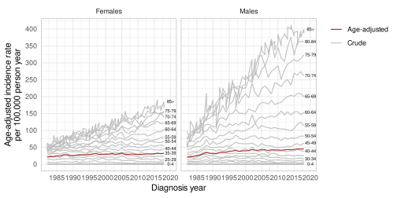

| Age Group | World | Europe | Nordic |
|---|---|---|---|
| 0-4 | 12000 | 8000 | 5900 |
| 5-9 | 10000 | 7000 | 6600 |
| 10-14 | 9000 | 7000 | 6200 |
| 15-19 | 9000 | 7000 | 5800 |
| 20-24 | 8000 | 7000 | 6100 |
| 25-29 | 8000 | 7000 | 6800 |
| 30-34 | 6000 | 7000 | 7300 |
| 35-39 | 6000 | 7000 | 7300 |
| 40-44 | 6000 | 7000 | 7000 |
| 45-49 | 6000 | 7000 | 6900 |
| 50-54 | 5000 | 7000 | 7400 |
| 55-59 | 4000 | 6000 | 6100 |
| 60-64 | 4000 | 5000 | 4800 |
| 65-69 | 3000 | 4000 | 4100 |
| 70-74 | 2000 | 3000 | 3900 |
| 75-79 | 1000 | 2000 | 3500 |
| 80-84 | 500 | 1000 | 2400 |
| 85+ | 500 | 1000 | 1900 |
Age Adjusted Rates in Epidemiology
In general, rates means how fast something is changing usually over time. In epidemiology uses it to describe how quickly a disese occurs in a population. For example, 35 cases of melanoma cases in 100,000 person per year convey a the sense of speed of spread of disease in that population. Incidence rate and mortality rate are two examples that we will discuss further below.
In epidemiology, rate measures the frequency of occurance of an event in a given population over certain period of time1.
Let us use melanoma as a outcome in the following discussion. Here, we can calculate a crude incidence rate as,
\[\mathcal{R} = \frac{\textsf{no. of melanoma cases}}{\textsf{no. of person-year}} \times \textsf{some multiplier}\]
In the case of mortality rate, we can replace the numerator of above expression by the number of melanoma deaths.
Age-specific rate
Weather to understand a broder prespecitve or to compare across population, these rates are often analyzed stratified by sex and age. This also helps to remove the confounding effection of these factors. The incidence/mortality rate per age-group is usually referred to as Age-specific rates where rates are computed for each age-groups. This is often desirable since factor age has a strong effect on mortality and incidence of most disease especially the cronic one.
Age-adjusted rate
Many research articles, however presents the age-adjusted rates. Age-adjusted rates are standardized (weighted) using some standard population age-structure. For example, many european studies on melanoma uses european standard age distribution. While any reasonal studies have also used world standard population. Cancer registry in their reports sometimes uses age-structure of that country in some given year. For instance, Norway2 and Finland3 have used the their population in 2014 as standard population in their recent cancer report while Australia have used 2001 Australian population4.
Standardized (adjusted) rates makes comparison between the population possible. Figure @ref(fig:age-std) shows the difference in the age distribution between world population and European population. Following table are some of the standard population often used in the study. Further on standard popuation see seer.cancer.gov5.
| Age Group | Std.Population |
|---|---|
| 00 | 13818 |
| 01-04 | 55317 |
| 05-09 | 72533 |
| 10-14 | 73032 |
| 15-19 | 72169 |
| 20-24 | 66478 |
| 25-29 | 64529 |
| 30-34 | 71044 |
| 35-39 | 80762 |
| 40-44 | 81851 |
| 45-49 | 72118 |
| 50-54 | 62716 |
| 55-59 | 48454 |
| 60-64 | 38793 |
| 65-69 | 34264 |
| 70-74 | 31773 |
| 75-79 | 26999 |
| 80-84 | 17842 |
| 85+ | 15508 |
Calculating age-standardized rate
The age-standardized rate (ASR) is calculated as,
\[\text{Age.Std. Rate} = \frac{\sum_i\mathcal{R}_i\mathcal{w}_i}{\sum_i\mathcal{w}_i}\]
where, \(\mathcal{w}_i\) is the weight corresponding to \(i^\text{th}\) age-group in the reference population.
Let’s explore further with an example from melanoma cases from Australia.
Example
The following example have used the Austrailian cancer data with 5-year age-group6 after filtering melanoma cases from 1982 to 2018. The dataset has yearly count and age-specific incidence rate of melanoma for men and women.
Let us use the above European standard population to find the yearly age-standardized incidence by sex.
data <- fread("melanoma.csv")
std_pop <- popEpi::stdpop18data[AgeGroup %in% c("85-89", "90+"), AgeGroup := "85+"]
setnames(std_pop, c("AgeGroup", "World", "Europe", "Nordic"))
std_pop[AgeGroup == "85", AgeGroup := "85+"]
std_pop[, c(2:4) := lapply(.SD, prop.table), .SDcols = 2:4]
asp_data <- merge.data.table(data, std_pop[, .(AgeGroup, World)], by = "AgeGroup")
asp <- asp_data[, .(AgeAdjRate = sum(ASR * World)), by = .(Year, Sex)]asp[, tail(.SD, 8), by = Sex] %>%
dcast.data.table(
formula = Sex ~ Year,
value.var = "AgeAdjRate") %>%
kableExtra::kbl(caption = paste(
"Age-standardized incidence rate of melanoma",
"Australia from 2011 to 2018"
)) %>%
kableExtra::kable_styling(full_width = FALSE)| Sex | 2011 | 2012 | 2013 | 2014 | 2015 | 2016 | 2017 | 2018 |
|---|---|---|---|---|---|---|---|---|
| Females | 28.915 | 29.6905 | 30.3050 | 30.5225 | 30.8590 | 32.161 | 31.5110 | 32.404 |
| Males | 41.433 | 42.3845 | 43.1275 | 42.8415 | 43.7275 | 45.309 | 45.2745 | 45.040 |
Now, let us compare the age-specific rates (crude rates) and age-standardized rates with a plot,
Compare the age-specific rates and age-adjusted rates

Compare the age-adjusted rates by sex
ggplot() +
geom_line(
data = data,
aes(
x = Year,
y = ASR,
group = AgeGroup,
color = "Crude"
)
) +
geom_line(
data = asp,
aes(
x = Year,
y = AgeAdjRate,
group = 1,
color = "Age-adjusted"
)
) +
geom_text(
data = data[Year == max(Year)],
check_overlap = TRUE,
size = rel(2),
color = "#0f0f0f",
aes(
x = Year + 2,
y = ASR,
label = AgeGroup
)
) +
scale_x_continuous(breaks = scales::breaks_extended(8)) +
scale_y_continuous(breaks = scales::breaks_extended(8)) +
scale_color_manual(NULL, values = c("firebrick", "grey")) +
facet_grid(cols = vars(Sex)) +
theme_minimal() +
theme(
panel.border = element_rect(fill = NA, color = "darkgrey"),
legend.position = c(0, 1),
legend.justification = c(0, 1)
) +
labs(
x = "Diagnosis year",
y = paste(
"Age-adjusted incidence rate",
"per 100,000 person year",
sep = "\n"
)
)Discussion
Figure Figure 1 shows that the incidence of melanoma has larger difference in men between the age-groups than in women and men also have a sharp increase in older age group. In addition, the Figure Figure 2 shows that males have higher age-adjusted incidence of melanoma than women in Australia and this trend is increasing over time with rapid increase before 1983 before a drop.
Age-adjusted rates are useful for comparing rates between population but it cannot give the interpretation required for comparing within a population or over a time period in that population. This is one of the reason, cancer registry uses the internal (population structure of their own population) to compute the age-adjusted rates.
Footnotes
https://www.cdc.gov/csels/dsepd/ss1978/lesson3/section1.html↩︎
https://www.kreftregisteret.no/globalassets/cancer-in-norway/2021/cin_report.pdf↩︎
https://cancerregistry.fi/reports-and-publications/annual-report-on-cancer-in-finland/↩︎
https://www.aihw.gov.au/reports/cancer/cancer-in-australia-2021/summary↩︎
https://seer.cancer.gov/stdpopulations/stdpop.19ages.html↩︎
https://www.aihw.gov.au/reports/cancer/cancer-data-in-australia/data↩︎